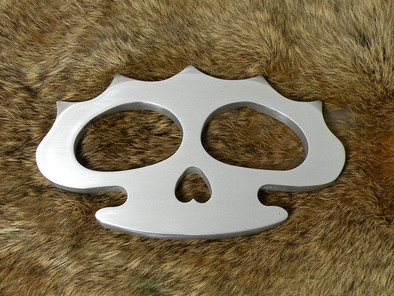

Death's Head Knuckle Dusters Death's Head Knuckle Dusters
Death's Head Knuckle Dusters Death's Head Knuckle DustersDuring WWII, British commandos in the Middle East carried knives with stylized knuckle dusters forming the handle and guard. The unique design was refered to as the "Death's Head" knuckle knife because of the handles' resemblance to a skull.
Having seen the design online and in books, I thought I would like to copy the knife, or at least the knuckle duster portion, however, I had no dimensions, nor any indication of how comfortable a grip the "death's head" provided. To test the design for size and fit, I made a pattern from wood.

The above knuckle duster is made from 3/8" cherry, stained and lacquered. While I originally made the wooden knuckle duster as a pattern only, I decided through some abusive testing that the harder, denser hardwoods would make very effective knuckle dusters. I have been told by a student of the history of brass knuckles and fist loads that lighter knuckle dusters were preferred by those who used them because they did not slow the punch. Wooden knuckle dusters have the advantage then, of being lighter, cheaper, and easier to make than their metal counterparts. Additionally, many state laws specifically outlaw the carrying of metal knuckles, thereby giving legal advantage to wood as well.
The wooden patterns I made showed me that the grip provided by the "death's head" design was extremely comfortable and secure, so I decided to proceed with making a metal prototype.
Above and below are knuckle dusters made of 3/8" 6061-T6 aluminum. I "machined" this aluminum only with a drill, files, and sandpaper; I had rather less machinery at the time than I do today. Being aluminum, they are still quite light, even though I left them oversized. I originally planned to use these knuckle dusters as a mold pattern to cast some from other metals, however, I have yet to complete that project.

The smooth skull seemed an obvious variation on the typical spiked death's head, and perhaps more humane, though a humane knuckle duster may be somewhat oxymoronic. Surprisingly, it was not much easier to make, given the tools I had available.
Future plans include incorporating the design into a full reproduction of the original death's head knuckle knife, as well as casting the design in brass.
Created by Sean Corron, April 2, 2011.